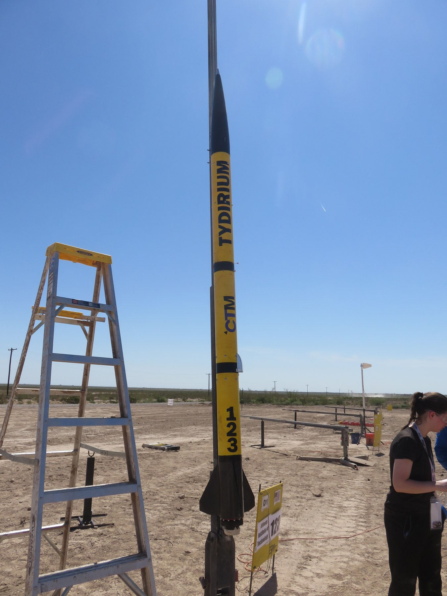
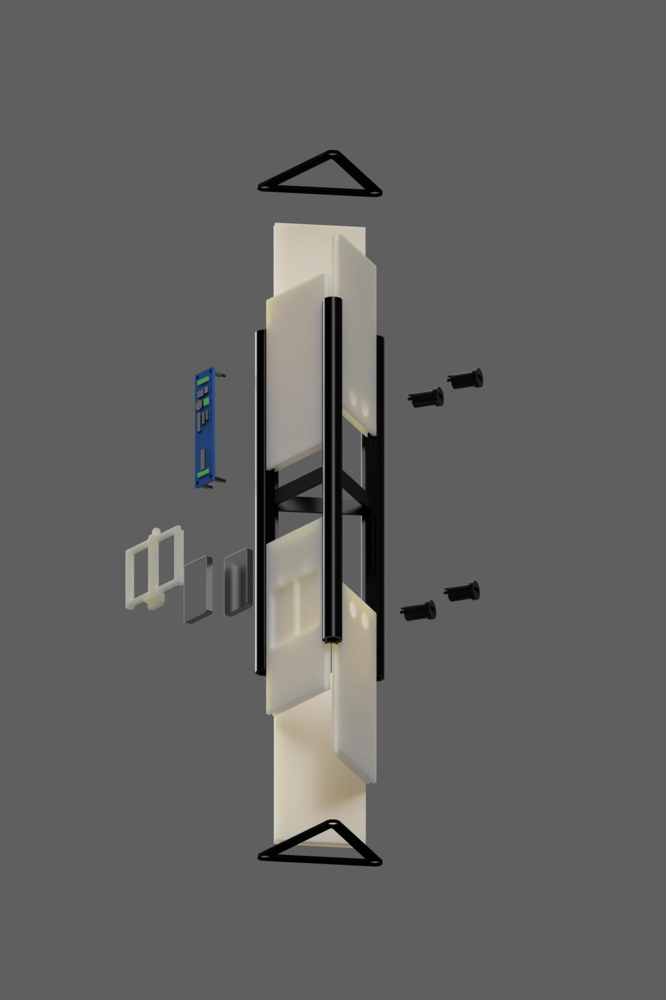
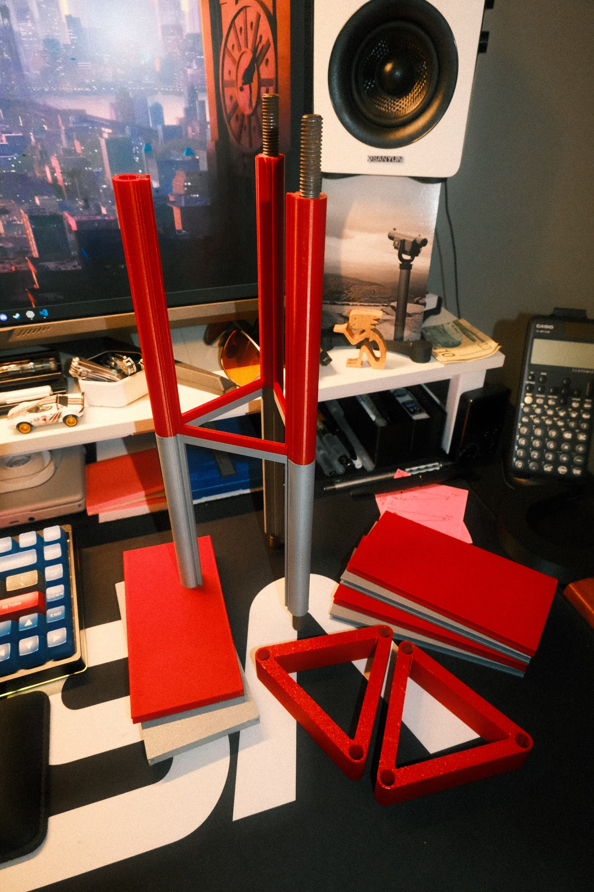
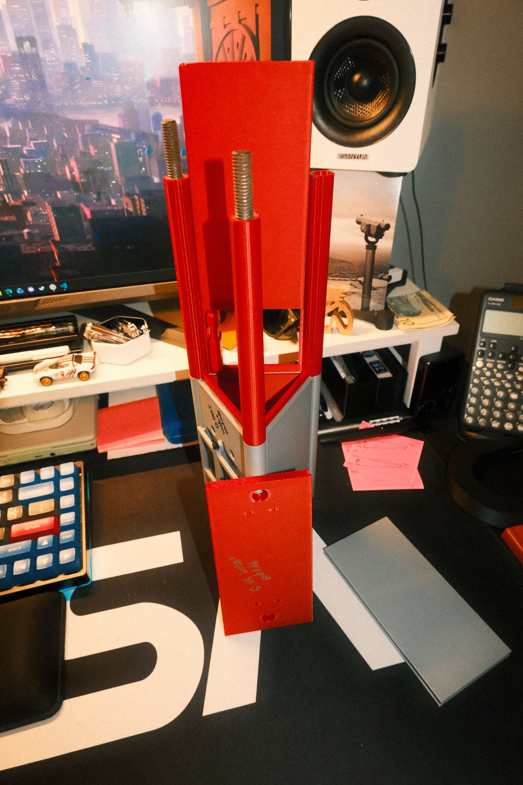
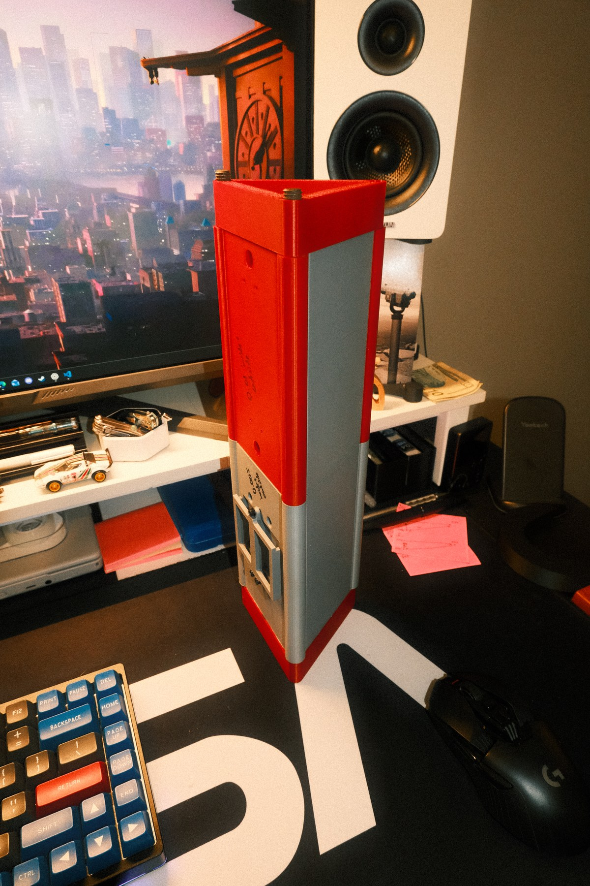

Key Topics
- Modular avionics packaging
- PLA proof-of-concept
- Sliding-panel tolerance testing
- Temperature-resistant final materials
A PLA prototype of a modular avionics bay for Tydirium, a student sounding rocket.
This project documents a PLA prototype for the avionics bay intended for Tydirium, a student sounding rocket. The prototype combines 3D-printed structural components, threaded hardware, and removable panels as a proof of concept and to test sliding-panel tolerances before the final bay is manufactured.
The final flight-ready avionics bay has not yet been made. It is planned in PETG or carbon-fiber PETG to provide greater temperature resistance than the PLA prototype.




